2．复函数论的开始
我们已经看到，复数尤其是复函数是由于与部分分式积分法、确定负数与复数的对数、保形映射，以及实系数多项式的分解等相联系而实际进入数学的。实际上18世纪的人们在复数及复函数方面所做的工作远不止此。达朗贝尔在他的流体力学论文《关于流体阻力的一个新理论试论》（Essay on a New Theory of the Resistance of Fluids，1752）中，考虑了一个物体经过各向同性的、无重量理想流体的运动，联系这一研究，还考虑了下面的问题。他想确定出两个函数p及q，它们的微分是
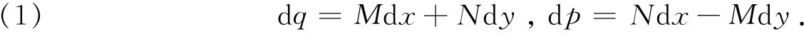
由于量N及M在dp和dq中都出现，故立即推知
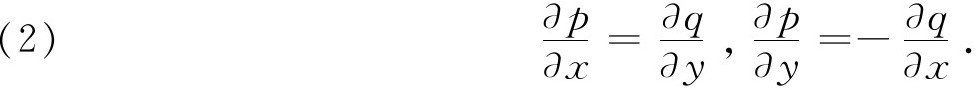
这些方程现在称为柯西-黎曼方程。方程（2）是说（第19章第6节）qdx＋pdy和pdx-qdy是某些函数的恰当微分。于是表达式（我们将用i表示
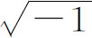
，虽然欧拉只是偶尔这样用，到高斯才成为普遍的用法。）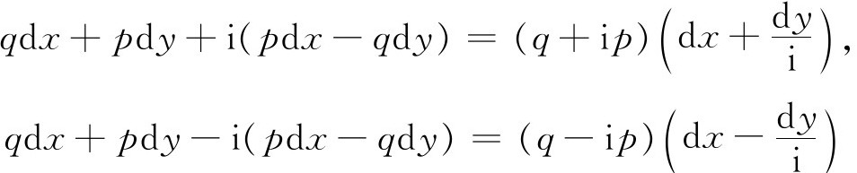
也是完全微分，从而q＋ip是x＋y/i的函数，q-ip是x-y/i的函数。达朗贝尔设
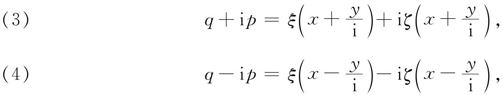
其中ξ和ζ是有待于确定的函数，在特殊的情形下，达朗贝尔曾把它们确定出来。将（3）及（4）相加并相减，他得出p和q。这一点的意义是表明了p和q是一个复函数的实部及虚部。
欧拉指出了如何利用复函数去计算实积分的值。从1776年起到1783年逝世时止，他写了一系列论文，这些论文从1788年起开始发表。其中有两篇是在1793年和1797年(1)发表的。欧拉指出：z的任一函数，若对z＝x＋iy具有形式M＋iN，其中M，N为实函数，那么它对于z＝x-iy就具有形式M-iN。他说，这是复数的基本定理。他利用这个断言去求实积分的值。
假定
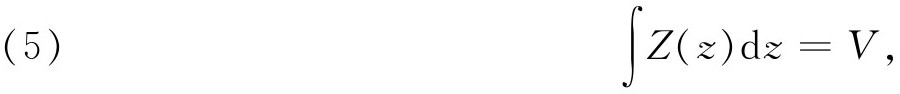
其中z是实的。他令z＝x＋iy，从而V变为P＋iQ。于是
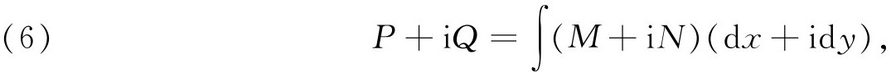
其中M＋iN现在是Z（z）的复形式。根据他的基本断言，
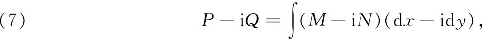
所以将实部及虚部分开，就有
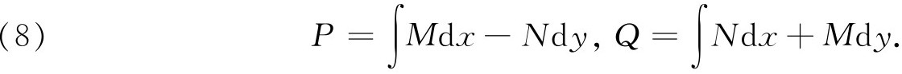
于是，Mdx-Ndy与Ndx＋Mdy分别是P与Q的恰当微分，随之有
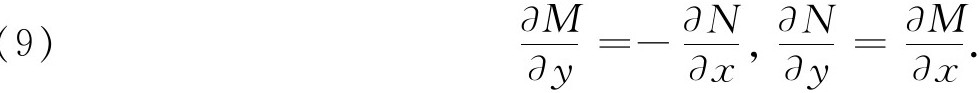
这样在Z（z）中代入z＝x＋iy，“就得到两个函数M和N，它们具有值得注意的性质：
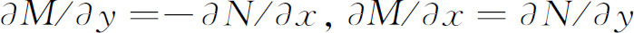
。P与Q也有类似的性质”。这里欧拉强调了一个复函数的实部和虚部即M和N，满足柯西-黎曼方程。但是，他的主要点是利用积分（8）去计算（5），因为P等于原来的V。为将（8）中的积分化为一元函数的积分，欧拉在（5）中把z＝x＋iy换为z＝r（cosθ＋isinθ），并保持θ不变。事实上这就是沿着复平面上过原点的一条射线积分。然后他用他的方法去求一些积分的值。拉普拉斯也使用了复函数去求积分的值。在从1782年起到他的名著《概率的分析理论》（Théorie analytique des probabilités，1812）为止的一系列论文中，他像欧拉那样，把实积分转换为复积分来计算实积分的值。拉普拉斯要求优先权，因为欧拉的论文发表得比他晚。不过，即使是上面提到的1793年和1797年的论文，就已在1777年3月在彼得堡科学院宣读过。在这一工作中拉普拉斯附带地引进了我们现在称之为解微分方程的拉普拉斯变换方法。
欧拉、达朗贝尔和拉普拉斯的工作构成了函数论的重要进展。不过，在他们的工作中有一个本质的局限性，他们依靠把f（x＋iy）的实部和虚部分开来进行他们的分析工作。复函数实际上不是基本的实体。显然，这些人对于使用复函数还感觉到很不自然。拉普拉斯在他1812年的书中指出：“这个由实到虚的过渡可以看作是一个启发式的方法，它像长期以来数学家所用的归纳法。但是，如果十分谨慎地有约束地使用这个方法，那么所得到的结果总是可以证明的。”他的确强调，结果都必须验证。